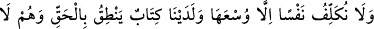
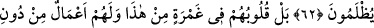
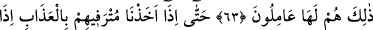
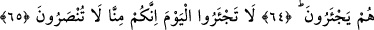
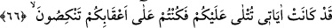
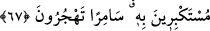

BOŞUNA SIZLANMAYIN
BUGÜN!
62. Biz hiç kimseyi gücünün yettiğinden başkası ile yükümlü kılmayız.
Nezdimizde hakkı söyleyen bir kitap vardır ve onlar haksızlığa uğratılmazlar.
63. Hayır, onların (o inkârcıların) kalpleri bu hususta cehâlet içindedir. Ayrıca
onların bundan (bu şirk ve inkârcılıklarından) öte birtakım (kötü) işleri vardır ki,
onlar bu işleri yapar dururlar.
64. En nihayet, refah ve bolluk içinde olanlarını sıkıntıya (veya azaba)
uğrattığımızda, bakarsın ki onlar feryadı basarlar.
65. Boşuna sızlanmayın bugün! Zira bizden yardım göremeyeceksiniz!
66-67. Çünkü âyetlerim size okunurdu da, siz, buna karşı kibirlenerek arkanızı
döner, geceleyin (Kâbe’nin etrafında toplanarak) hezeyanlar savururdunuz.
“Biz hiç kimseyi, gücünün yettiğinden başkası ile yükümlü kılmayız.” Ancak tâkati
kadarıyla mükellef kılarız. Lâ ilâhe illallah sözü ve onun gerektirdiği hükümler güç
yetirilebilir şeylerdendir. Mukâtil der ki: “Ayakta namaz kılamayan, oturarak kılsın.
Oturarak kılamayan îmâ ile kılsın.” Harîrî de şöyle der: Allah kullarını kendini tam
mânâsıyla değil, güçleri nisbetinde tanımakla mükellef kılmıştır. Eğer onları kendisini
hakkıyla tanımakla mükellef kılsaydı, O’nu tanıyamazlardı. Çünkü O’nu kendisinden
başka hiç kimse hakîkî mânâda tanıyamaz.”
Câmî der ki:
Akıl, kemâl-i ilâhî künhünü görebilmek için ne kadar dikkat etti
Ancak sonunda “ilâh” kelimesinin ilk harfi olan elif,
O aklın iki gözüne de mil çekti; akıl kör oldu
“Nezdimizde hakkı” doğruyu “söyleyen bir kitap” amel defterleri “vardır” herkesin